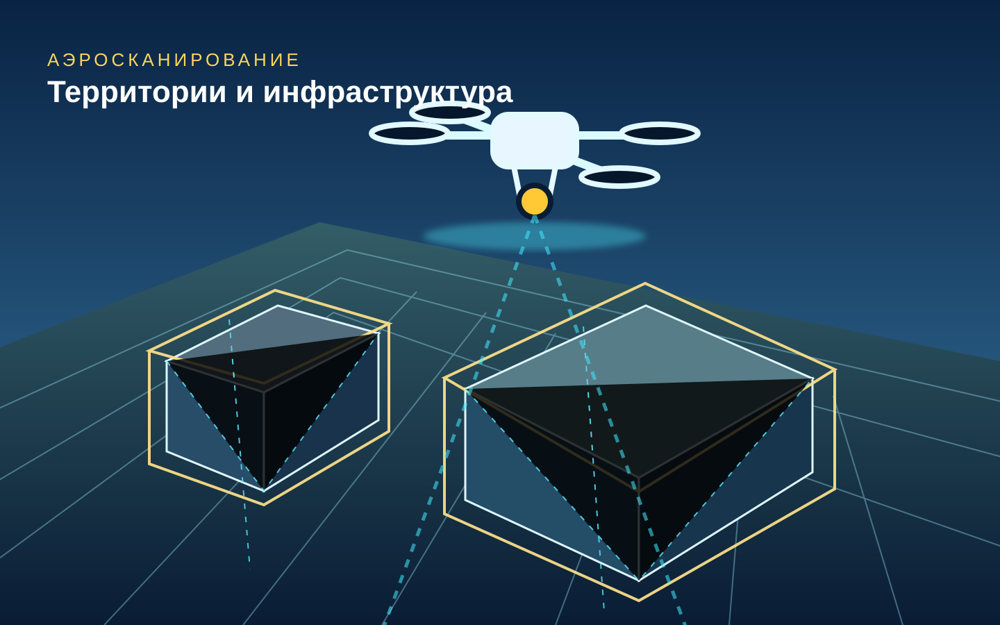
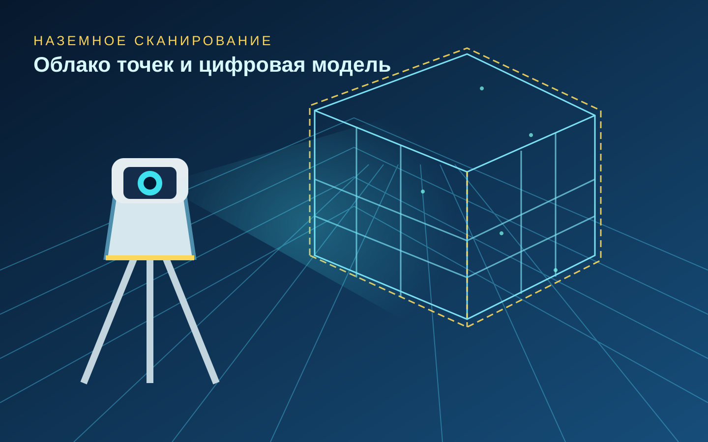

3D-сканирование больших территорий и объектов
Высокодетальная цифровая фиксация зданий, промышленных площадок, строительных объектов и территорий. Аэрофотосъёмка с БПЛА, наземное лазерное сканирование и подготовка пространственных данных для проектирования, обследования и реконструкции.
От съёмки местности до точной цифровой основы проекта
Метод обследования подбирается по характеристикам объекта и техническому заданию. Мы ориентируемся на измеримые результаты: полноту охвата, согласованную точность, удобный формат исходных данных и практическую пригодность для инженеров.

Большие площади, инфраструктура, карьеры, земельные участки, контроль изменений на стройке.

Фасады, цеха, сооружения и инженерные элементы с построением цифровой пространственной модели.
Чёткость на каждом этапе
Уточняем границы, назначение съёмки, требуемую точность, доступ к объекту и форматы передачи данных.
Подбираем БПЛА, лазерные сканеры и методы привязки под особенности площадки. Съёмку выполняют профильные специалисты.
Проверяем полноту данных и передаём согласованные материалы: облако точек, ортофотоплан, 3D-модель или иной результат по ТЗ.
Стоимость — по запросу
Цена рассчитывается индивидуально и зависит от площади территории, сложности объекта, требуемой точности, доступности площадки, сроков и состава итоговых материалов. Предварительную оценку готовим после обсуждения задачи.
Отправная информация для расчёта: местоположение, примерная площадь, тип объекта, цель сканирования и желаемые сроки.
Сложные объекты требуют качественных исходных данных
Решения рассматриваются для девелоперов, проектных бюро, промышленных предприятий, собственников инфраструктуры, строительных организаций и инвесторов. Состав техники, допуски, точность и итоговые форматы фиксируются в коммерческом предложении и техническом задании.